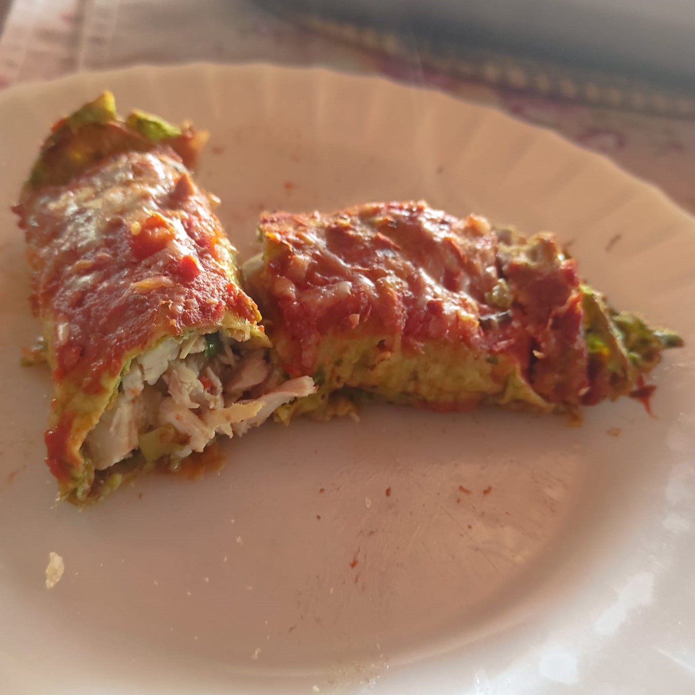
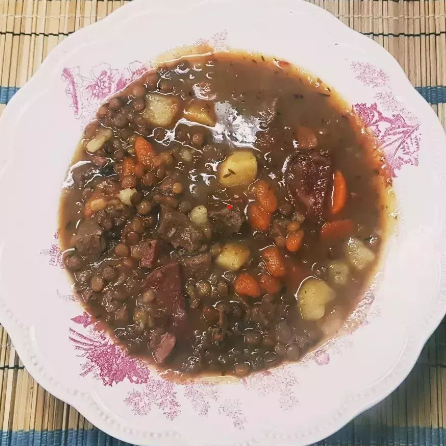

Canelones de carne con masa de espinaca
Ingredientes
Para 12 unidades
- 1 atado de espinaca
- 2 huevos
- 200 gr. de harina común
- 200 ml. de leche
- 300 ml. de agua
- 500 gr. de carne picada
- 1 cebolla
- 1 morrón
- Sal, pimienta, ají y pimentón a gusto
- Cantidad necesaria de aceite
Preparación
Comenzar por el relleno ya que debe estar frío para poder armar los canelones. En una olla agregar el aceite y freir la cebolla y el morrón cortados en cubos pequeños. Agregar la carne picada y dejar cocinar todo muy bien. Condimentar a gusto con sal, pimienta, ají, ajo y pimentón para dar color. Retirar del fuego y dejar enfriar. Por otro lado en un bol colocar 2 huevos con la espinaca previamente lavada. Mixear para que se rompa la liga de los huevos y la espinaca. Luego agregar la leche, el agua y la harina intercalándolas para que no se formen grumos. En una sartén caliente pincelar con aceite y agregar una cucharada de la mezcla. Cocinar de ambos lados y repetir hasta terminar la masa. Para el armado colocar una cucharada o dos del relleno en el centro del panqueque. Cerrar con cuidado incluyendo los bordes para que no se escape el relleno. Colocar en una fuente y llevar a horno moderado (180°C- 200°C) por aproximadamente 30 minutos. Opcional: se le puede agregar por arriba salsa roja o salsa blanca a gusto.
Guiso de lentejas
Ingredientes
Para 8 porciones
- 2 cebollas
- 1 morrón
- 2 zanahorias
- 500 gr. de papa
- 500 gr. de carne
- 200 gr. de panceta ahumada
- 1 chorizo colorado
- 500 gr. de lentejas
- 250 gr. de puré de tomate
- 1 l. caldo de verduras
- Cantidad necesaria de aceite
- Sal, pimienta, orégano y ají a gusto
Preparación
En una olla colocar el aceite y freir la cebollas, el morrón y la zanahoria cortadas en cuadrados pequeños. Agregar la panceta cortada en tiras y el chorizo colorado cortado en cuartos de rodajas. Dejar cocinar y desgrasar todo. Agregar la carne y dejar que se dore. Condimentar a gusto. Volcar en la preparación el caldo e incorporar las lentejas, el pure de tomate y la papa. Dejar cocinar a fuego bajo (150°C) por al menos una hora.